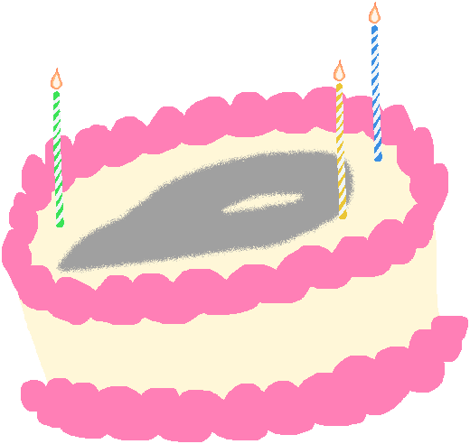

Birthday Needle has been updated to v1.0.2! This update adds a new candle, and makes a few other minor adjustments.
Changelog:
Added 3rd candle dressup.
Renamed Flames dressup to reflect the fact it is a single toggle.
Added Zichqec to the craftman.
Added craftmanw field.
Enjoy a slice of Needle-y goodness today!